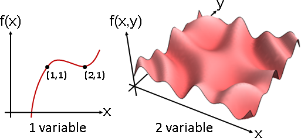
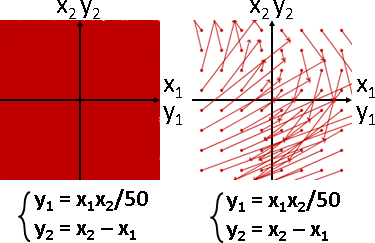
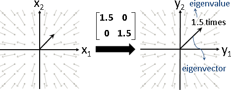
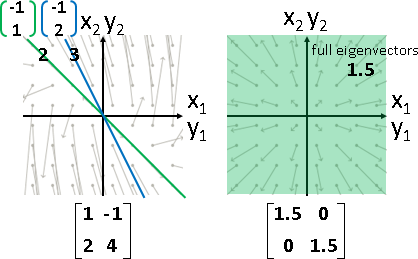
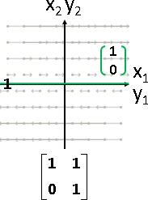
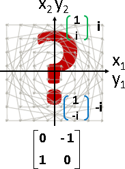

Eigenbasis (I)
Function
本站文件「Function」，介紹了「輸入有很多個變數，輸出只有一個變數」的函數，也畫出了函數圖形。
此處要介紹「輸入有很多個變數，輸出有很多個變數」的函數，並且畫出函數圖形。
此處以ℝ² ⇨ ℝ²函數為例，輸入是兩個變數、輸出是兩個變數的函數，可以畫在二維平面上。因為繪圖結果往往是一片滿，看不出任何意義，所以把輸入改成等距取樣、保持間隔。
Linear Transformation
線性變換是一種特別的函數，函數圖形有著一種難以言喻的整齊。有時是一致朝外，有時是一致螺旋。

這樣的函數圖形，可以用來解釋真實世界的物理現象！例如磁場、氣旋等等。甚至數學家還把輸入輸出推廣到複數，發明「複變函數」的學問，發掘更多樣化的函數圖形──不過這是後話了。先讓我們專注於線性變換吧！
Linear Transformation的本質：朝著目標向前進
整齊的原因是什麼呢？數學家已經初步解決了這個問題！
數學家猜測，所謂的整齊，也許是指：「大家有著共識，方向一致。」再進一步猜測：「這當中有沒有堪稱表率，讓大家群起效尤的輸入輸出呢？是不是有人一路以來始終如一，堅持走在正確的道路上？」於是數學家嘗試尋找：「有哪些輸入向量，經過線性變換之後，方向保持不變。」
Eigenvector與Eigenvalue
數學家嘗試解A x = λ x這道式子。A是線性變換；x是向量，方向保持不變，稱作「特徵向量eigenvector」；λ是縮放倍率，稱作「特徵值eigenvalue」。
A x = λ x，移項得A x - λ x = 0，合併得(A - λI) x = 0。
如果是唯一解，得到x是零向量。缺乏討論意義。
如果要有其他解，那麼令det(A - λI) = 0。把det(A - λI)展開，形成λ的多項式，稱作「特徵多項式characteristic polynomial」。特徵多項式求根，即得λ。
求得eigenvalue，代入到(A - λI) x = 0，求得eigenvector。
A = [ 1 -1 ] A - λI = [ (1-λ) -1 ] det(A - λI) = 0
[ 2 4 ] [ 2 (4-λ) ] => (1-λ)(4-λ) + 2 = 0
=> λλ - 5λ + 6 = 0
=> λ = 2 or 3
when eigenvalue λ = 2 | when eigenvalue λ = 3
|
(A - λI) x = 0 | (A - λI) x = 0
|
[ (1-2) -1 ] [x₁] = [0] | [ (1-3) -1 ] [x₁] = [0]
[ 2 (4-2) ] [x₂] [0] | [ 2 (4-3) ] [x₂] [0]
|
get { x₁ = 1k | get { x₁ = -1k
{ x₂ = 1k | { x₂ = 2k
|
then eigenvector x = [-1] | then eigenvector x = [-1]
[ 1] | [ 2]
eigenvector的任何一種倍率也都是eigenvector。大家習慣取長度為1的eigenvector當作代表，方向則是隨意。
如果有許多個eigenvector擁有相同的eigenvalue，那麼這些eigenvector構成的平面、空間、……當中的任何一個向量都是eigenvector。大家習慣取互相垂直的eigenvector當作代表，方向則是隨意。
eigenvector的推導過程冗長複雜，不太討喜。然而數學家尚未想到其他導致整齊的原因，也說不定沒有其他原因了。因此大家很重視eigenvector，所有線性代數的課本都會仔細介紹eigenvector。
特殊現象
一、eigenvector不存在。
例如歪斜矩陣，eigenvector不足N個。
二、eigenvalue必是N個。
數學家藉由determinant與characteristic polynomial來定義eigenvalue。N次多項式必有N個根，必得N個eigenvalue。這個定義方式，有時候產生了多餘的eigenvalue。
例如歪斜矩陣，eigenvector不足N個，eigenvalue卻是N個。
三、eigenvector存在，但是是複數。
根據定義，數學家硬是算出複數的eigenvalue，進一步得到複數的eigenvector。
例如旋轉矩陣，eigenvector確實存在，即便沒有任何縮放、即便無法作圖。
特徵向量演算法（Characteristic Polynomial）
多項式求根。請參考「Root Finding」。
然而無法克服：一、根的範圍完全不明；二、根可能是複數。